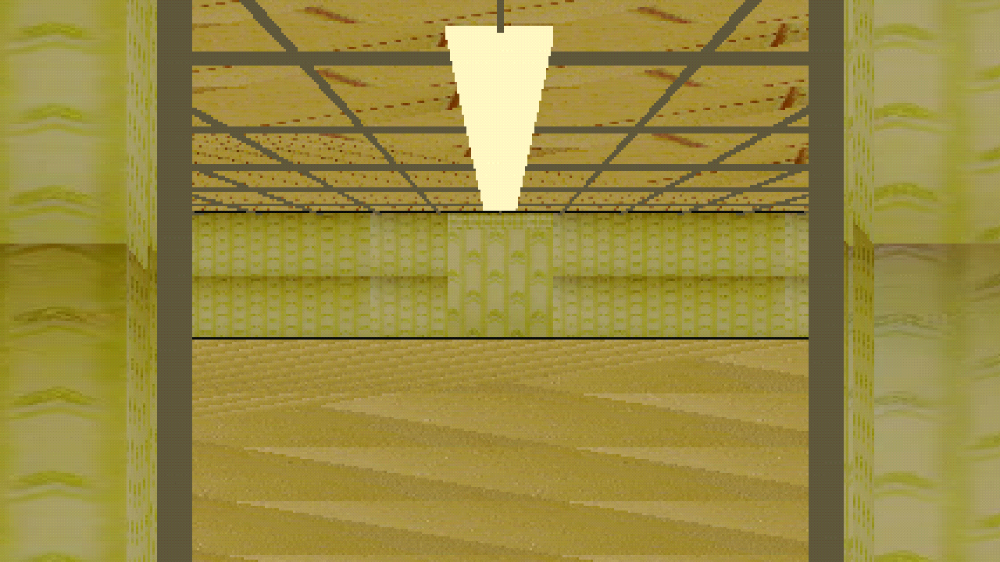
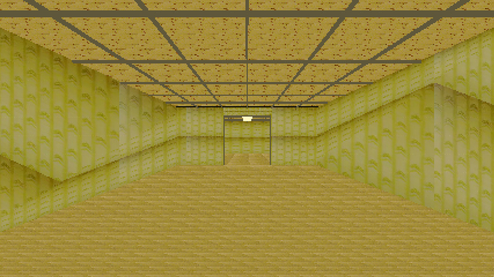
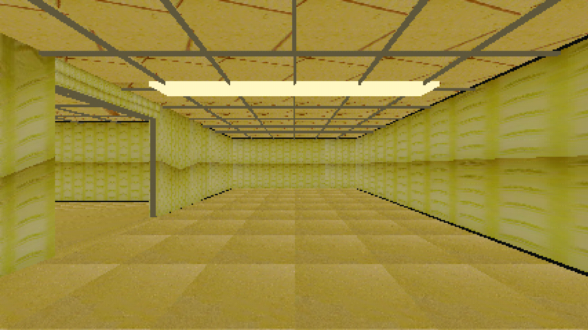
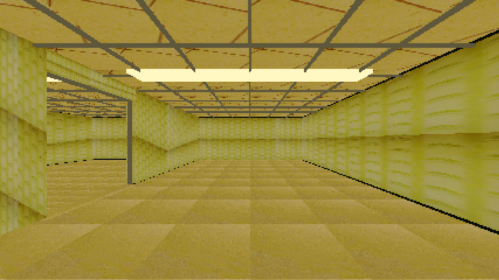

Finite seed-149 layout, streamed with the current room and its graph neighbors. Unloaded connected openings are shown with authored solid caps. This is an authored layout, not recovered source-video connectivity.
Layout diagram · Evidence report ·
Walkthrough command: godot4 --path godot_walk --rendering-driver vulkan --resolution 1280x720 res://scenes/issue156_streamed_walkthrough.tscn



